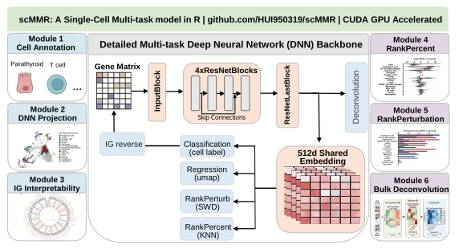
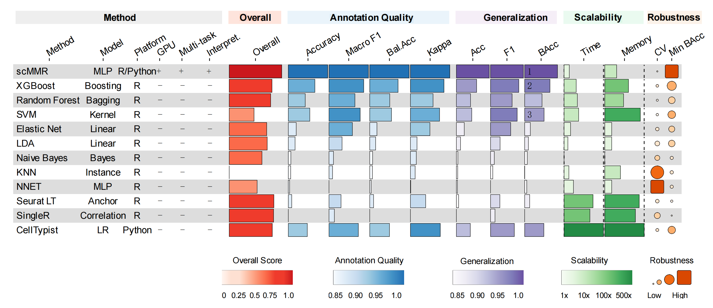

Single-Cell Multi-Task Model in R — A comprehensive toolkit for single-cell RNA-seq analysis powered by PyTorch multi-task deep neural networks.

Overview
scMMR trains a shared ResNet backbone that jointly learns cell type classification and embedding regression (e.g., UMAP coordinates), producing a unified 512-dimensional cell representation that powers an end-to-end single-cell analysis ecosystem:
- Cell type prediction with OOD (out-of-distribution) detection
- Bulk RNA-seq deconvolution for cell type proportion estimation
- Gene importance attribution via Integrated Gradients
- Pathway enrichment analysis (GSEA & SCPA) with 16 bundled GMT databases
- Perturbation ranking using Wasserstein, MMD, and energy distance metrics
- Pseudotime trajectory analysis with CytoTRACE 2 integration
- Quality control including doublet detection and ambient RNA estimation
- Rich visualization suite (alluvial, bubble, scatter, beeswarm, GSEA plots, and more)
Six Modules
Around a shared ResNet backbone and a 512-d embedding, scMMR organizes its functionality into six modules that cover the main tasks of single-cell analysis. Modules 1–3 hang directly off the multi-task heads; Modules 4–5 operate on the frozen 512-d embedding; Module 6 reuses the backbone with a dedicated decoder head.
Module 1 — DNN Cell Type Annotation
Reference-based cell type prediction driven by the classification head Linear(512, 256) → SELU → Dropout(0.1) → Linear(256, K). Trained with cross-entropy + label smoothing (ε = 0.1), calibrated via temperature scaling, and equipped with OOD detection (max softmax probability below threshold → Unknown). In the reference parathyroid atlas K = 16 cell types. > Key functions: DNN_train(), DNN_predict(), PlotAlluvia(), PlotAnnotation()
Module 2 — DNN Projection & PlotMAP
Reference projection that maps query cells onto the reference UMAP (or any 2-D embedding) without re-integrating the data. A regression head is trained with MSE on z-scored UMAP coordinates, and at inference time DNN_predict() uses a kNN-softmax (k = 30, τ = 10) over L2-normalized 512-d embeddings of the reference, yielding projected coordinates plus a per-cell confidence score (which PlotMAP() then visualizes). Stratified subsampling caps the reference at 1,000 cells per type / 20,000 total. > Key functions: DNN_predict(), PlotMAP(), EvaluateEmbedding(), DimPlot2(), FeaturePlot2()
Module 3 — IG Interpretability
Gene-level attribution via Integrated Gradients (Sundararajan 2017) with an all-zero baseline and n = 50 integration steps, batched at 200 cells per pass. Attributions are lifted to higher layers through bundled databases: Gene → Pathway (GMT, 16 databases) → Regulon (SCENIC). Pathway scoring aggregates |IG| through a binary gene×pathway mask normalized by pathway size (min 5 overlapping genes). Works in both global and per-cell-type modes. > Key functions: DNN_predict(explain = TRUE), PlotImportance(), RunPathwayAnalysis(), PlotPathwayBubble()
Module 4 — RankPercent (differential abundance)
Differential cell-type abundance in the shared embedding space, inspired by miloR (Dann 2022). Steps: (1) build a kNN graph (k = 30) on the 512-d embedding via FNN; (2) sample neighborhoods at proportion 0.2; (3) count cells per type × condition; (4) apply Fisher’s exact test per type; (5) correct p-values with Benjamini–Hochberg FDR. Requires ≥ 10 cells per type. Output: log-FC + adjusted p-value per cell type. > Key functions: RankPercent(), PlotPercent()
Module 5 — RankPerturbation (expression perturbation)
Condition-level perturbation ranking, inspired by Augur (Skinnider 2021). For each cell type, scMMR extracts the first 20 PCs of the 512-d embedding and computes a distribution distance between the two conditions — default Sliced Wasserstein Distance (L = 50 projections), with MMD / Energy distance / AUC as alternatives. Significance is assessed via 1,000 label-permutation tests + BH FDR (min 5 cells per type). Output: ranked cell types with a normalized perturbation score. > Key functions: RankPerturbation(), PlotPerturbation(), PlotRankScatter()
Module 6 — DNN Bulk Deconvolution
Cell-type proportion estimation from bulk RNA-seq, inspired by TAPE (Chen 2022). Reuses the same ResNet backbone but switches the input to log1p(CPM) for continuous bulk expression. The training set is 5,000 pseudo-bulks generated by sampling proportions from Dirichlet(α = 1) and aggregating 500 cells per sample from the single-cell reference. A proportion head is followed by a 5-layer linear decoder K → 64 → 128 → 256 → 512 → n_genes whose weight product gives an interpretable signature matrix. Training loss: L_prop + 0.1·L_recon with an adaptive fine-tuning stage on the target bulk. > Key functions: DNN_deconv_train(), DNN_deconv_predict(), PlotPropCorrelation()
| # | Module | Core task | Head / Source | Algorithm (key params) | Representative output |
|---|---|---|---|---|---|
| 1 | Cell Type Annotation | Cell type prediction | Classification head | CE + label smoothing (ε = 0.1), temperature scaling, OOD threshold | Labels + calibrated probs, Unknown flag |
| 2 | DNN Projection & PlotMAP | Reference UMAP projection | Regression head | MSE on z-UMAP + kNN-softmax (k = 30, τ = 10) on L2-norm 512-d | 2-D projected coords + confidence |
| 3 | IG Interpretability | Gene / pathway / regulon attribution | IG on backbone | Integrated Gradients (n = 50, x′ = 0), GMT + SCENIC | Top genes, pathway scores, regulon drivers |
| 4 | RankPercent | Differential abundance | 512-d embedding (kNN) | kNN (k = 30) + Fisher exact + BH FDR (inspired by miloR) | log-FC + p_adj per cell type |
| 5 | RankPerturbation | Expression perturbation ranking | 512-d embedding (distance) | SWD (L = 50) / MMD / Energy / AUC + 1,000 permutations (inspired by Augur) | Ranked cell types + perturbation score |
| 6 | Bulk Deconvolution | Bulk cell-type proportions | Deconvolution head + decoder | Dirichlet(α = 1) pseudo-bulk (N = 5,000) + TAPE decoder + adaptive stage | Proportion matrix (samples × types), sigmatrix |
Benchmark
scMMR was benchmarked against 11 other cell type annotation methods (12 methods in total) across 7 datasets (4 public pancreas + 3 parathyroid datasets), evaluating annotation quality, cross-dataset generalization, scalability, and robustness.

Figure 3B. Comprehensive benchmark of 12 cell type annotation methods. scMMR ranks 1st overall (scIB-style weighted score: 40% Annotation + 25% Generalization + 15% Scalability + 10% Robustness + 10% Usability). Scalability metrics are based on 100K cells with literature-validated estimates (Abdelaal 2019, Huang & Zhang 2021, scaLR 2025).
Architecture
scMMR’s backbone follows a multi-task residual design inspired by scMMT (Chen et al.):
Binary Input (cells × 6000 HVGs, non-zero → 1)
↓ InputBlock : BatchNorm → Dropout(0.25) → Linear(6000, 512) → SELU
↓ 4 × ResNetBlock : Dropout(0.1) → Linear(512, 512) → SELU + skip connection
↓ ResNetLastBlock : (no skip) → 512-d Shared Embedding
├→ Classification head : Linear(512,256) → SELU → Drop(0.1) → Linear(256, K)
│ CE + label smoothing (ε = 0.1) + temperature scaling
└→ Regression head : Linear(512,256) → SELU → Drop(0.1) → Linear(256, D)
MSE on z-scored UMAP (D = 2 by default)Training & optimization. Adam (lr = 1 × 10⁻³) + CosineAnnealingWarmRestarts (T₀ = 10); batch size 256; early stopping patience = 10. The two-task loss L_total = w_cls · L_cls + w_reg · L_reg is rebalanced on-the-fly by GradNorm (Chen 2018, α = 0.15), so classification and regression converge at comparable rates without manual tuning.
Backend. PyTorch under the hood (inst/python/) called from R through reticulate, with automatic CUDA detection for GPU acceleration.
Installation
2. Set up Python environment
scMMR requires Python (≥ 3.8) with PyTorch and scanpy. You can either create a new environment or use an existing one:
library(scMMR)
# Option A: Auto-install a conda environment (CPU)
install_scMMR_python()
# Option A (with GPU): Auto-install with CUDA support
install_scMMR_python(gpu = TRUE)
# Option B: Use an existing conda environment
use_scMMR_python(condaenv = "your-env-name")Quick Start
The following snippets walk through all six modules in order. Load the package and initialize the Python environment once at the top:
library(scMMR)
use_scMMR_python(condaenv = "scMMR") # replace with your own conda env nameTrain the multi-task DNN backbone
# Train once — the same model powers Modules 1–3
DNN_train(
input = seurat_ref, # Seurat object or "reference.h5ad"
label_column = "cell_type",
embedding_key = "umap", # key in obsm / reduction
save_path = "model.pt",
n_top_genes = 6000,
num_epochs = 50,
device = "auto" # auto-detect GPU
)Module 1 — DNN Cell Type Annotation
# Reference-based cell type prediction with OOD detection
result <- DNN_predict(
query = seurat_query, # or "query.h5ad"
model_path = "model.pt",
explain = TRUE # also fills Module 3 outputs
)
result$predictions # cell type labels + confidence + OOD flags
# Visualize label flow between reference and query
PlotAlluvia(result$predictions, from = "ref_label", to = "pred_label")Module 2 — DNN Projection & PlotMAP
# Query cells projected onto the reference UMAP (regression head)
proj_umap <- result$embedding # n_cells × D coordinates
PlotMAP(proj_umap, labels = result$predictions$pred_label)
# Evaluate projection quality against ground truth (optional)
EvaluateEmbedding(proj_umap, labels = seurat_query$cell_type)Module 3 — IG Interpretability
# Per-cell-type gene importance from Integrated Gradients
PlotImportance(result$importance, top_n = 20)
# Lift gene attributions to pathway-level scores
pa_result <- RunPathwayAnalysis(
seurat_obj,
group_by = "cell_type",
split_by = "condition",
gene_sets = "hallmark",
method = "gsea"
)
PlotPathwayBubble(pa_result)Module 4 — RankPercent (differential abundance)
# KNN-based log-FC of cell-type proportions across conditions
da <- RankPercent(
seurat_obj,
group_by = "cell_type",
split_by = "condition",
ref = "control"
)
PlotPercent(da)Module 5 — RankPerturbation (expression perturbation)
# Rank cell types by embedding-space perturbation between conditions
ranks <- RankPerturbation(
embedding = result$embedding,
group_col = "condition",
ref_group = "control",
metrics = c("wasserstein", "mmd")
)
PlotPerturbation(ranks)
PlotRankScatter(ranks)Module 6 — DNN Bulk Deconvolution
# Train a dedicated deconvolution head from the single-cell reference
DNN_deconv_train(
input = seurat_ref,
label_column = "cell_type",
save_path = "deconv_model.pt"
)
# Estimate cell-type proportions from bulk RNA-seq
props <- DNN_deconv_predict(
bulk_input = "bulk_expression.csv",
model_path = "deconv_model.pt"
)
PlotPropCorrelation(props, truth = ground_truth_props)Bundled Gene Set Databases
scMMR ships with 16 GMT files in inst/extdata/gmt/:
| Database | Human | Mouse |
|---|---|---|
| Hallmark (MSigDB) | h.all.v2022.1.Hs.symbols.gmt |
— |
| KEGG Legacy | c2.cp.kegg.v2022.1.Hs.symbols.gmt |
— |
| Reactome | reactome.gmt |
m_reactome.gmt |
| GO Biological Process | GO_bp.gmt |
m_GO_bp.gmt |
| Transcription Factors | TF.gmt |
m_TF.gmt |
| Immune Signatures | immune.gmt |
— |
| CollecTRI Regulons | collectri.human.gmt |
— |
| PROGENy Signaling | progeny.human.top500.gmt |
— |
| Proliferation | proliferation.combined.gmt |
— |
Key Functions
| Category | Functions |
|---|---|
| Training & Prediction |
DNN_train(), DNN_predict(), DNN_deconv_train(), DNN_deconv_predict()
|
| Pathway Analysis |
RunPathwayAnalysis(), RunGseaEnrich(), RunGsea(), RunTraceGSEA()
|
| Gene Set Scoring |
ComputeModuleScore(), read_gmt(), parse_gene_sets()
|
| Ranking |
RankPerturbation(), RankPercent()
|
| Trajectory |
RunCytoTRACE2(), RunTraceGene(), PlotDynamicFeatures()
|
| Differential Expression |
RunDE(), RunCorrelation()
|
| Quality Control |
ComputeDoublets(), ComputeAmbientRNA(), StandardPipeline()
|
| Embedding Evaluation |
EvaluateEmbedding(), PlotEmbeddingEval()
|
| Visualization |
PlotPathwayBubble(), PlotAlluvia(), PlotImportance(), PlotPerturbation(), PlotPercent(), PlotRankScatter(), PlotGsea(), PlotDE(), PlotCytoTRACE2(), PlotScatter(), PlotMAP()
|
Demo Scripts
Example workflows are available in inst/demo/:
-
demo_predict_and_plot.R— Full prediction + visualization pipeline -
demo_deconvolution.R— Bulk deconvolution workflow -
demo_benchmark_classification.R— DNN vs SVM/RF/KNN benchmarks -
demo_pathway_analysis.R— GSEA & SCPA pathway analysis -
demo_compute_module_score.R— Gene set scoring with AUCell/Seurat/UCell -
demo_evaluate_embedding.R— Embedding quality assessment -
demo_cytotrace.R— Pseudotime trajectory analysis
System Requirements
- R ≥ 4.0.0
- Python ≥ 3.8 with: torch, scanpy, anndata, numpy, pandas, scipy
- GPU (optional): CUDA-compatible GPU for accelerated training
Documentation
Full function reference and vignettes are available on the pkgdown site.